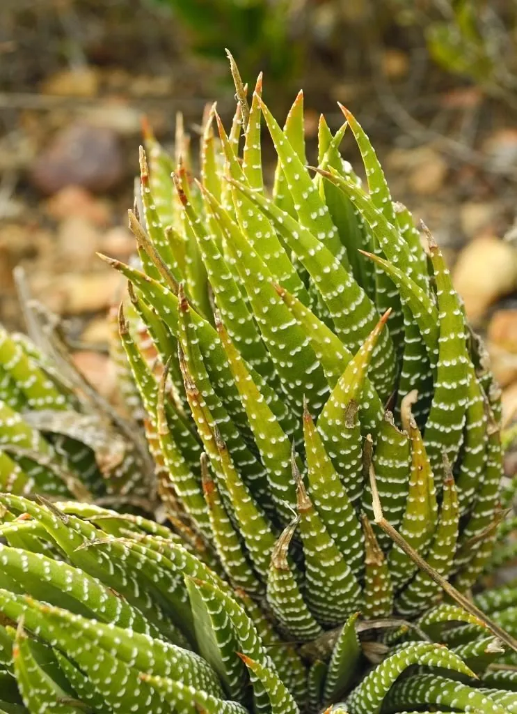

多肉植物 · 植物界
条纹十二卷 Haworthia fasciata

阿福花科瓦苇属小型多肉，深绿色叶片背面有白色疣突条纹，莲座状排列，耐阴好养，原产南非东开普省，是常见的桌面多肉。
- 分类
- 门被子植物门纲木兰纲目天门冬目科阿福花科属瓦苇属
- 栖息环境
- 南非东开普省岩石缝隙与灌木丛下，喜半阴、通风
- 地理分布
- 原产南非东开普省，世界各地广泛盆栽
- 保护级别
- 暂无评估
物种志
条纹十二卷为阿福花科瓦苇属小型多肉植物，株高 5–15 厘米，叶片披针形，肉质坚硬，深绿色，螺旋排列成莲座状；叶片背面有横向的白色疣突条纹，形似斑马纹。花葶细长，花小，白色带绿色条纹，花期夏季；果实为蒴果。
条纹十二卷原产南非东开普省的干旱地区，常生于岩石缝隙和灌木丛下，喜半阴、通风和排水良好的环境，忌强光暴晒和积水。它叶片坚硬、含水分多，耐旱性较强，适合放在室内明亮处养护，是新手入门的常见多肉。栽培以颗粒土为主，浇水见干见湿；繁殖以分株和叶插为主，基部容易萌发侧芽，逐渐形成群生的莲座，几年就能长满一盆，适合摆放在书桌和窗台。
形态与习性
- 株高5–15 厘米，莲座状
- 花期夏季，花小，白色带绿纹
- 果期花后结蒴果
- 光照喜半阴散射光，忌强光暴晒
- 水分耐旱，见干见湿，忌积水
- 土壤颗粒为主、排水良好的矿质土
- 繁殖分株、叶插
- 主要用途室内盆栽、桌面观赏
趣味知识
- 条纹十二卷叶片背面有白色疣突组成的横纹，形似斑马纹。
- 它耐阴性强，放在室内明亮处也能正常生长。
- 叶片坚硬、储水多，比大多数多肉更耐旱。
- 基部容易萌发侧芽，可养成群生的莲座。